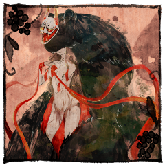
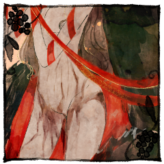
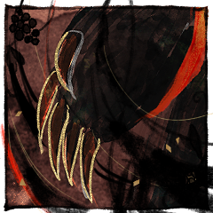
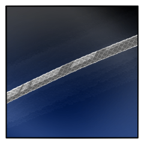

◆ラウンド３
GM
ではラウンド３、プロット開示をお願いします！
[ 獅子鞍 透夜 ] がダイスシンボルを公開。出目は 2 です。
[ 七竈 蘇芳 ] がダイスシンボルを公開。出目は 2 です。
[ 七竈 幽 ] がダイスシンボルを公開。出目は 4 です。
[ 懸鉤子 蜜 ] がダイスシンボルを公開。出目は 1 です。
GM
◆ラウンド３
プロット４：幽 ２：透夜、蘇芳 １：蜜
プロット４ 行動：七竈 幽
七竈 幽
2D6>=5 （判定：憑依術） (2D6>=5) ＞
10[5,5] ＞ 10 ＞ 成功
獅子鞍 透夜
2D6>=9 （判定：見敵術） (2D6>=9) ＞
12[6,6] ＞ 12 ＞ スペシャル(【生命力】1点か変調一つを回復)
七竈 幽
獅子鞍透夜を殺せと囁くそれは、今はもう幽を蝕むものではない。
獅子鞍 透夜
宝珠・迦具土がもたらしたそれは、本来であれば手放されるべきものであった。
獅子鞍 透夜
2d6 (2D6) ＞
8[2,6] ＞ 8
七竈 蘇芳
2d6 (2D6) ＞
8[3,5] ＞ 8
七竈 蘇芳
2d6 (2D6) ＞
8[3,5] ＞ 8
獅子鞍 透夜
2ｄ6 (2D6) ＞
4[1,3] ＞ 4
プロット２ 行動：獅子鞍 透夜
獅子鞍 透夜
2D6-2>=5 （判定：絡繰術） (2D6-2>=5) ＞
7[1,6]-2 ＞ 5 ＞ 成功
GM
蘇芳は絡繰術より回避判定3回です。同プロットなので零討も乗りますね。
七竈 蘇芳
2D6>=9 （判定：手裏剣術） (2D6>=9) ＞
4[1,3] ＞ 4 ＞ 失敗
懸鉤子 蜜
2D6-2>=7 （判定：傀儡の術） (2D6-2>=7) ＞
4[2,2]-2 ＞ 2 ＞ 失敗
獅子鞍 透夜
2D6-2>=6 （判定：刀術） (2D6-2>=6) ＞
8[2,6]-2 ＞ 6 ＞ 成功
GM
奥義破りが通り、射撃戦ダメージ２点です。どこを潰しますか？＞蘇芳
[ 七竈 蘇芳 ] 忍術 : 1 → 0
[ 七竈 蘇芳 ] 謀術 : 1 → 0
プロット２ 行動：七竈 蘇芳
七竈 蘇芳
2D6>=5 （判定：手裏剣術） (2D6>=5) ＞ 8[2,6]
＞ 8 ＞ 成功
獅子鞍 透夜
2D6>=6 （判定：砲術） (2D6>=6) ＞
5[1,4] ＞ 5 ＞ 失敗
七竈 蘇芳
2D6-2>=7 （判定：登術） (2D6-2>=7) ＞
10[5,5]-2 ＞ 8 ＞ 成功
GM
接近戦ダメージが1点と射撃戦ダメージが1点です。蘇芳は分野決定の1D6を。
獅子鞍 透夜
忍術をつぶし、体術を兵糧丸で回復します。
[ 獅子鞍 透夜 ] 忍術 : 1 → 0
[ 獅子鞍 透夜 ] 忍具 : 2 → 1
獅子鞍 透夜
目標が定まらないのなら、誘導してやればいい。
獅子鞍 透夜
黒い炎が取り囲み、透夜はその熱を感知する。
獅子鞍 透夜
マイクロミサイルが蘇芳の行く手を阻む。
七竈 蘇芳
這い擦り回る影は一か所に収束し、一発目の着弾と同時に弾ける。
七竈 蘇芳
これまでの霧散するような動きではなく、明らかに”当たった”。
獅子鞍 透夜
破裂音の違うそこに向け、すかさず腕を振るう。
獅子鞍 透夜
化生のカラダに銃口を突きつけ、迷わず引き金を引いた。
七竈 蘇芳
漆黒が弾を飲み込み、悶えるように僅か震える。
七竈 蘇芳
が、その内から弾の代わりに吐き出すかのように、棒手裏剣を放つ。
七竈 蘇芳
その意思すら丸ごと呑み込もうとするように。
獅子鞍 透夜
それは、たとえ肌が切り裂かれようと揺らぐことはない。
獅子鞍 透夜
腹に突き刺さった棒手裏剣を抜いて捨てた。
プロット１ 行動：懸鉤子 蜜
懸鉤子 蜜
【接近戦攻撃】を使用します。
対象は七竈 蘇芳。
懸鉤子 蜜
2D6-2>=5 （判定：怪力） (2D6-2>=5) ＞
10[4,6]-2 ＞ 8 ＞ 成功
七竈 蘇芳
2D6+1>=10 （判定：登術） (2D6+1>=10) ＞
3[1,2]+1 ＞ 4 ＞ 失敗
GM
失敗ですね。接近戦ダメージが１点、揺らしで射撃戦１点、見越で射撃戦１点。
GM
潰れてますね。任意３分野を潰してください。＞蘇芳
七竈 蘇芳
体術、戦術、妖術。
で、体術を兵糧丸で回復します。
[ 七竈 蘇芳 ] 戦術 : 1 → 0
[ 七竈 蘇芳 ] 妖術 : 1 → 0
[ 七竈 蘇芳 ] 忍具 : 2 → 1

懸鉤子 蜜
借り物ではない隠の気に圧されるも。
地を踏みしめる足が、面を通してみる光が火神を捉える。
懸鉤子 蜜
この身に借りているのは、隠だけではない。
子を思う慈母神の力。愛するものへ向ける愛の力。

懸鉤子 蜜
そしてその、愛は。
借り物なんかじゃない。

懸鉤子 蜜
だから迷いなく、その腕を振るう。
肉薄のさなか。火神へ掌を、爪を突き立てる。
七竈 蘇芳
神と呼ばわれるも、魔と呼ばわれるも人次第。
七竈 蘇芳
だがかつて火神と呼ばれたそのころは、もはや遥か遠く。
たかだが10年の間に、この身に得たものは多すぎた。
七竈 蘇芳
火神の血の通わぬ身体を女の腕が捩じり上げ、引き裂かれ、
影が逃れようとばかりにその合間から漏れ出る。
七竈 蘇芳
ーー痛い。体よりなおも、痛みが走る部分がある。
七竈 蘇芳
皮肉にもその痛みこそが、この身を焦がす執着の炎があることを教える。
懸鉤子 蜜
あの子のためなら死ねる。
あの子のためにこそ、死ねない。
GM
ラウンド３が終了します。ラウンド終末忍法の使用タイミングですが。
七竈 蘇芳
2D6>=13 （判定：手裏剣術） (2D6>=13) ＞
10[4,6] ＞ 10 ＞ 失敗
◆ラウンド４
七竈 幽
2D6>=5 （判定：分身の術） (2D6>=5) ＞ 9[3,6]
＞ 9 ＞ 成功
[ 七竈 幽 ] がダイスシンボルを公開。出目は 4 です。
[ 懸鉤子 蜜 ] がダイスシンボルを公開。出目は 1 です。
[ 七竈 蘇芳 ] がダイスシンボルを公開。出目は 5 です。
[ 七竈 幽 ] がダイスシンボルを公開。出目は 2 です。
[ 獅子鞍 透夜 ] がダイスシンボルを公開。出目は 2 です。
GM
◆ラウンド４
プロット５：蘇芳 ２：幽、透夜 １：蜜
プロット５ 行動：七竈 蘇芳
七竈 幽
2d6 (2D6) ＞
8[2,6] ＞ 8
獅子鞍 透夜
2d6 (2D6) ＞
10[5,5] ＞ 10
プロット２ 行動：七竈 幽
GM
自ら秘密を開示し、回想シーン演出を行ってください。
懸鉤子 蜜
後悔する日もあった。
これでいいんだと、言い聞かせる日も。
懸鉤子 蜜
罪を償うとか、そういうのもちょっとはあるし。
後ろめたい気持ちだっていっぱいあるよ。
懸鉤子 蜜
【懸鉤子
蜜の秘密】
透夜は不知火の生き残りであり、『宝珠・迦具土』の器である。
クライマックスフェイズ開始時に
透夜が『宝珠・迦具土』を持っていた場合、透夜は火神となる。
あなたの本当の使命は【火神を殺す】ことだ。
懸鉤子 蜜
「君を自由にする」
透夜にそんな約束をしたのは幽である。
あなたはその約束の相手が自分であると透夜に思い込ませ、
あなたの傍にいるように縛りつけた。
懸鉤子 蜜
しかし、ずっと共に過ごしてきた透夜をあなたは失いたくない。
透夜があなたにプラスの感情を抱いてくれるのであれば
使命を【透夜を自由にする】に変更してもよい。
懸鉤子 蜜
とーや。
バースデーケーキ楽しみにしてて。
懸鉤子 蜜
友達も呼んじゃう？
とーやの友達、私に紹介して。
懸鉤子 蜜
卒業旅行にも行こう。
ショッピングもたくさんしよう。
懸鉤子 蜜
ふたりだけじゃ抱えきれないほど、世界は、未来はいっぱい楽しいよ。
懸鉤子 蜜
好きな子、出来たら教えてね。
私の恋バナも聞いてほしいよ。
GM
了解しました。回想シーン効果により、奥義破り判定に+3の修正です。判定をどうぞ。
懸鉤子 蜜
2D6-2+3>=9 （判定：傀儡の術） (2D6-2+3>=9) ＞
7[2,5]-2+3 ＞ 8 ＞ 失敗
GM
このままでは透夜に3点の分野ランダムダメージですが。
獅子鞍 透夜
2D6-2>=9 （判定：見敵術） (2D6-2>=9) ＞
9[4,5]-2 ＞ 7 ＞ 失敗
GM
了解しました。奥義破りは衣装術よりくらましがついて-2です。
七竈 幽
【秘密：七竈 幽】
あなたの命を繋いでいるのは七竈 蘇芳に与えられた『神鏡・啼沢女』の力によるものだ。
七竈 蘇芳に助けられるまでの記憶を失っているあなたにとって、七竈
蘇芳は何者にも代えがたい存在だ。
あなたの本当の使命は『七竈
蘇芳に恩を返す』ことである。
しかし、あなたの肉体は死した不知火の一族の業火によって支配されている。
この支配を脱するまで、あなたの使命は『獅子鞍
透夜を殺す』となる。
支配されている間、戦闘での戦果はGMが決定する。
七竈 幽
目の前の透夜の、そのさらに向こう。闇の中に蘇芳の気配がある。
七竈 幽
蘇芳が傍にいないことが、昔から怖かった。
七竈 幽
そのためにこの生命を燃やすことに躊躇いはない。
GM
回想シーン効果により、奥義破り判定に+3の修正です。判定をどうぞ。
七竈 幽
2D6-2+4>=9 （判定：火術） (2D6-2+4>=9) ＞
10[5,5]-2+4 ＞ 12 ＞ 成功
GM
了解です。効果だけまず提示していただきましょうか。
GM
演出は相手の演出を受ける形で。お願いします。
獅子鞍 透夜
《光陰妨害張網 -プリズマチックバリア-》
指定特技 ：縄術
エフェクト：絶対防御
GM
クリティカルヒットによる生命力の喪失が無効化。
七竈 幽
透夜を飲み込まんばかりに、その身を取り巻く。
七竈 幽
女に妨害の暇も与えず、透夜に刃が迫り──
獅子鞍 透夜
しゃがみ込み、足首に装着された照明銃を。
上方に向け撃つ。
獅子鞍 透夜
飛び出した弾から特殊な縄で編まれた網が展開し、炎の揺らめきを反射する。
獅子鞍 透夜
襲い来る敵の視界をくらませ、なおかつ。
プロット２ 行動：獅子鞍 透夜
獅子鞍 透夜
2D6>=5 （判定：縄術） (2D6>=5) ＞ 7[2,5]
＞ 7 ＞ 成功
七竈 幽
2D6>=10 （判定：分身の術） (2D6>=10) ＞
7[3,4] ＞ 7 ＞ 失敗
[ 七竈 幽 ] 器術 : 1 → 0
[ 七竈 幽 ] 謀術 : 1 → 0
獅子鞍 透夜
掴んだ網の端を引き、真横から幽へと目掛け振る。

獅子鞍 透夜
重く、広い範囲に及ぶ縄がぶおんと風をきり。
獅子鞍 透夜
炎の揺らめきの中、幾本かのそれは不可視の攻撃となって襲い掛かる。
七竈 幽
捉えそこねた縄が、幽の身体を横薙ぎに打ち付ける。
七竈 蘇芳
ましてや己がかつて神と呼ばれたものならば。
七竈 幽
噴き出した血が幽を、肉迫した透夜を汚す。
獅子鞍 透夜
そういうもの。
別に、憎いから撃ったわけじゃない。
獅子鞍 透夜
お前の未来を押し付けられて、今度はあいつの死を押し付けようってか。
獅子鞍 透夜
「アイツが死んでもそういうようなら……」
プロット１ 行動：懸鉤子 蜜
懸鉤子 蜜
【黄泉軍】を使用します。
対象は七竈 蘇芳。
GM
鬼影により命中判定に-2の修正がつきます。どうぞ。
懸鉤子 蜜
2D6-2>=5 （判定：傀儡の術） (2D6-2>=5) ＞
8[3,5]-2 ＞ 6 ＞ 成功
GM
秘密を自ら提示し、回想シーン演出を行ってください。
七竈 蘇芳
闇の気配が、影を呼ばう。
かつて何にも縛られなかったころ。
七竈 蘇芳
人を、躊躇わず喰っていたころ。
その血肉を啜り、永遠に彷徨っていたころ。
七竈 蘇芳
身の内に宿した宝珠・迦具土の燃やすままに火神と呼ばれ。
七竈 蘇芳
神鏡・啼沢女の生かすままに不死であった。
七竈 蘇芳
『七竈』は燃えぬ木だと、
かつて風変りにも、死の間際に彼を話し相手とした男が教えた。
お前はいくら燃されても燃えぬ、七日竈のような鬼だ、と。
七竈 蘇芳
腹を満たした気まぐれで、燃えさしの子供を生かしたあの日まで。
七竈 蘇芳
・秘密：
あなたは火神と称される不死の命を持つ存在だ。
だが、己のうちにあった力『宝珠・迦具土』を奪われた上、
瀕死のPC1を助けるために不死の命の源である『神鏡・啼沢女』を与えた今、
あなたは定められた命を持つただの怪物となってしまった。
背景『劣性因子』を修得し、好きな妖魔忍法を１つ修得すること。
神であった頃の記憶も薄れた今、
胸に募るは共に生きてきたPC1への想いのみ。
PC1と互いにプラスの感情を結んでいる場合、
あなたは自分のドラマシーンでPC1と何かを約束し、
それを使命とすることもできる。
七竈 蘇芳
人を喰わなくなってからの10年の月日は短かった。
七竈 蘇芳
お前がそばにいれば、ずっと胸が温かいから。
七竈 蘇芳
お前との約束を、果たさなければならない。
GM
はい。回想シーン効果により、回避判定に+3の修正です。感情修正でさらに+1。
七竈 蘇芳
2D6+3+1>=12 （判定：登術） (2D6+3+1>=12) ＞
10[4,6]+3+1 ＞ 14 ＞ 成功
懸鉤子 蜜
この戦場のどこにあっても、その掌は追う。
重い爪が振りかぶられる。
七竈 蘇芳
強靭な爪によって闇が裂ける。そうして解ける。
七竈 蘇芳
それを包み込むように押し止め、芯に届かせない。
七竈 蘇芳
人とも神とも魔ともつかず、ただ七竈幽を抱く者として。
七竈 蘇芳
その愛はーー確かに、違わずそこにある。
GM
ピンゾロ振っても痛くないけどスペシャルが出たらおいしいという判定。
七竈 蘇芳
2D6>=13 （判定：手裏剣術） (2D6>=13) ＞
3[1,2] ＞ 3 ＞ 失敗